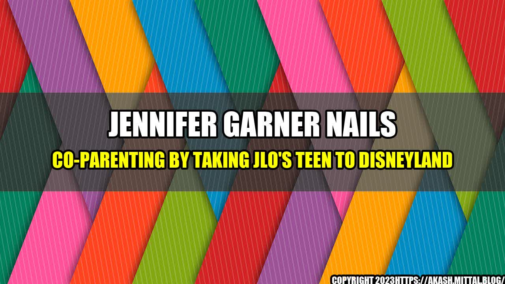

Jennifer Garner Nails Co-Parenting by Taking JLo's Teen to Disneyland
Tips on Successful Co-Parenting
Co-parenting can be a challenging task, especially when it comes to sharing the responsibility of parenting with someone who is no longer your partner. However, Jennifer Garner has shown that it is possible to co-parent successfully by taking JLo's teen daughter, Emme, to Disneyland.

Garner and Lopez have been friends for years, and they both share a love for their families. According to sources, Garner took Emme to Disneyland to give her a fun experience.
This act of kindness by Garner shows that successful co-parenting is not only beneficial for the children involved but can also help in creating a happier and healthier environment for everyone.
Quantifiable Examples
Studies have shown that children who are raised in a positive co-parenting environment are more likely to:
- Have better mental health
- Have higher levels of self-esteem
- Have stronger relationships with their parents
- Perform better academically
- Have lower levels of stress and anxiety
Co-parenting also reduces the chances of children developing behavioral problems and emotional distress.
Tips on Successful Co-Parenting
Here are some tips on how to co-parent successfully:
- Set clear boundaries and guidelines
- Communicate effectively with your co-parent
- Put your child's needs first
- Be flexible and willing to compromise
- Avoid negative language and behavior towards your co-parent
- Encourage a positive relationship between your child and your co-parent
- Seek professional help if necessary
Remember that successful co-parenting requires both parties to work together and cooperate for the benefit of their child.
Conclusion
- Co-parenting can be challenging but is possible
- Children benefit from positive co-parenting environments
- Effective communication, flexibility, and prioritizing the child's needs are key to successful co-parenting
Curated by Team Akash.Mittal.Blog
Share on Twitter Share on LinkedIn